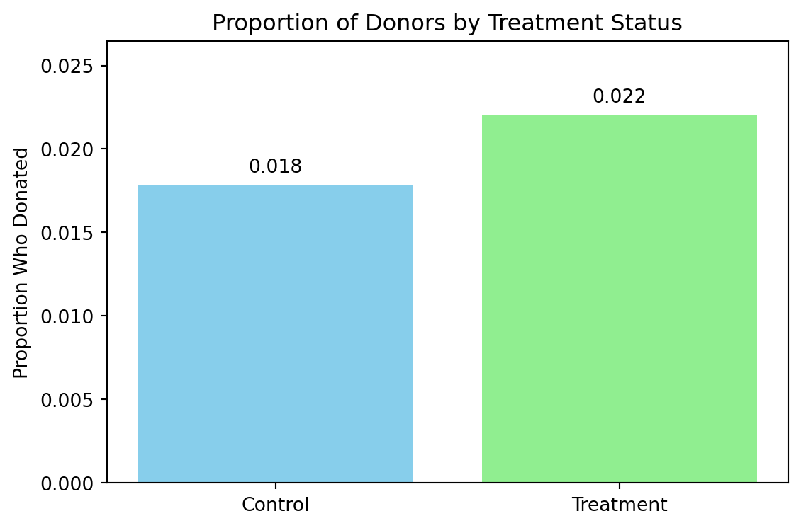
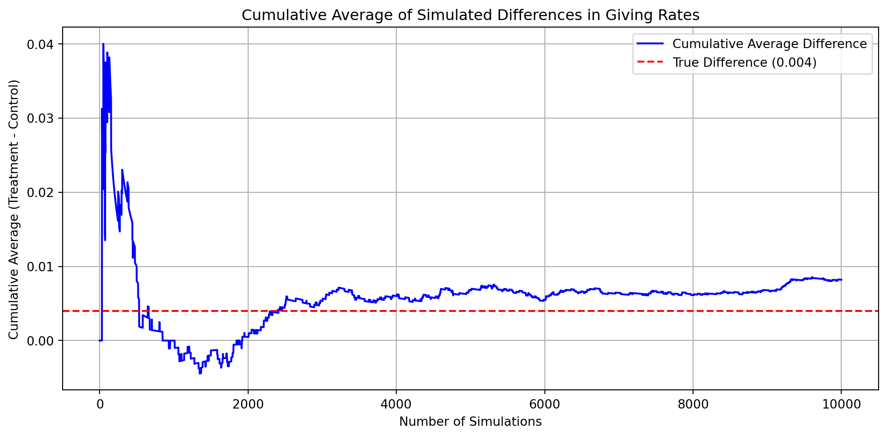

Dean Karlan at Yale and John List at the University of Chicago conducted a field experiment to test the effectiveness of different fundraising letters. They sent out 50,000 fundraising letters to potential donors, randomly assigning each letter to one of three treatments: a standard letter, a matching grant letter, or a challenge grant letter. They published the results of this experiment in the American Economic Review in 2007. The article and supporting data are available from the AEA website and from Innovations for Poverty Action as part of Harvard’s Dataverse.
In the early 2000s, economists Dean Karlan and John List partnered with a politically oriented nonprofit organization to run a large-scale natural field experiment on charitable giving. The organization sent out over 50,000 fundraising letters to prior donors, randomly assigning each recipient to a different version of the letter.
The central research question was: Does offering a matching grant increase the likelihood and amount of charitable donations?
To answer this, recipients were randomly assigned to: - A control group that received a standard appeal, - A treatment group that was told a generous donor would match their gift at one of several ratios: 1:1, 2:1, or 3:1.
Other variables were randomized as well: - The maximum amount of the matching grant ($25k, $50k, $100k, or unstated), - The suggested donation amount, based on their previous giving.
This rich experimental design allows for credible causal inference on how donors respond to match offers — both in whether they give at all (extensive margin) and how much they give (intensive margin). It’s one of the first large-scale field experiments to rigorously test “price” sensitivity in fundraising using real behavior and real money.
This project seeks to replicate their results.
Data
Description
import pandas as pd# Load the actual dataset you just uploadeddata = pd.read_stata("karlan_list_2007.dta")# Preview the first few rowsprint(data.head())
treatment control ratio ratio2 ratio3 size size25 size50 \
0 0 1 Control 0 0 Control 0 0
1 0 1 Control 0 0 Control 0 0
2 1 0 1 0 0 $100,000 0 0
3 1 0 1 0 0 Unstated 0 0
4 1 0 1 0 0 $50,000 0 1
size100 sizeno ... redcty bluecty pwhite pblack page18_39 \
0 0 0 ... 0.0 1.0 0.446493 0.527769 0.317591
1 0 0 ... 1.0 0.0 NaN NaN NaN
2 1 0 ... 0.0 1.0 0.935706 0.011948 0.276128
3 0 1 ... 1.0 0.0 0.888331 0.010760 0.279412
4 0 0 ... 0.0 1.0 0.759014 0.127421 0.442389
ave_hh_sz median_hhincome powner psch_atlstba pop_propurban
0 2.10 28517.0 0.499807 0.324528 1.0
1 NaN NaN NaN NaN NaN
2 2.48 51175.0 0.721941 0.192668 1.0
3 2.65 79269.0 0.920431 0.412142 1.0
4 1.85 40908.0 0.416072 0.439965 1.0
[5 rows x 51 columns]
# Summary statistics for all variablesdata.describe()
treatment
control
ratio2
ratio3
size25
size50
size100
sizeno
askd1
askd2
...
redcty
bluecty
pwhite
pblack
page18_39
ave_hh_sz
median_hhincome
powner
psch_atlstba
pop_propurban
count
50083.000000
50083.000000
50083.000000
50083.000000
50083.000000
50083.000000
50083.000000
50083.000000
50083.000000
50083.000000
...
49978.000000
49978.000000
48217.000000
48047.000000
48217.000000
48221.000000
48209.000000
48214.000000
48215.000000
48217.000000
mean
0.666813
0.333187
0.222311
0.222211
0.166723
0.166623
0.166723
0.166743
0.222311
0.222291
...
0.510245
0.488715
0.819599
0.086710
0.321694
2.429012
54815.700533
0.669418
0.391661
0.871968
std
0.471357
0.471357
0.415803
0.415736
0.372732
0.372643
0.372732
0.372750
0.415803
0.415790
...
0.499900
0.499878
0.168560
0.135868
0.103039
0.378105
22027.316665
0.193405
0.186599
0.258633
min
0.000000
0.000000
0.000000
0.000000
0.000000
0.000000
0.000000
0.000000
0.000000
0.000000
...
0.000000
0.000000
0.009418
0.000000
0.000000
0.000000
5000.000000
0.000000
0.000000
0.000000
25%
0.000000
0.000000
0.000000
0.000000
0.000000
0.000000
0.000000
0.000000
0.000000
0.000000
...
0.000000
0.000000
0.755845
0.014729
0.258311
2.210000
39181.000000
0.560222
0.235647
0.884929
50%
1.000000
0.000000
0.000000
0.000000
0.000000
0.000000
0.000000
0.000000
0.000000
0.000000
...
1.000000
0.000000
0.872797
0.036554
0.305534
2.440000
50673.000000
0.712296
0.373744
1.000000
75%
1.000000
1.000000
0.000000
0.000000
0.000000
0.000000
0.000000
0.000000
0.000000
0.000000
...
1.000000
1.000000
0.938827
0.090882
0.369132
2.660000
66005.000000
0.816798
0.530036
1.000000
max
1.000000
1.000000
1.000000
1.000000
1.000000
1.000000
1.000000
1.000000
1.000000
1.000000
...
1.000000
1.000000
1.000000
0.989622
0.997544
5.270000
200001.000000
1.000000
1.000000
1.000000
8 rows × 48 columns
Variable Definitions
Variable
Description
treatment
Treatment
control
Control
ratio
Match ratio
ratio2
2:1 match ratio
ratio3
3:1 match ratio
size
Match threshold
size25
$25,000 match threshold
size50
$50,000 match threshold
size100
$100,000 match threshold
sizeno
Unstated match threshold
ask
Suggested donation amount
askd1
Suggested donation was highest previous contribution
askd2
Suggested donation was 1.25 x highest previous contribution
askd3
Suggested donation was 1.50 x highest previous contribution
ask1
Highest previous contribution (for suggestion)
ask2
1.25 x highest previous contribution (for suggestion)
ask3
1.50 x highest previous contribution (for suggestion)
amount
Dollars given
gave
Gave anything
amountchange
Change in amount given
hpa
Highest previous contribution
ltmedmra
Small prior donor: last gift was less than median $35
freq
Number of prior donations
years
Number of years since initial donation
year5
At least 5 years since initial donation
mrm2
Number of months since last donation
dormant
Already donated in 2005
female
Female
couple
Couple
state50one
State tag: 1 for one observation of each of 50 states; 0 otherwise
nonlit
Nonlitigation
cases
Court cases from state in 2004-5 in which organization was involved
statecnt
Percent of sample from state
stateresponse
Proportion of sample from the state who gave
stateresponset
Proportion of treated sample from the state who gave
stateresponsec
Proportion of control sample from the state who gave
stateresponsetminc
stateresponset - stateresponsec
perbush
State vote share for Bush
close25
State vote share for Bush between 47.5% and 52.5%
red0
Red state
blue0
Blue state
redcty
Red county
bluecty
Blue county
pwhite
Proportion white within zip code
pblack
Proportion black within zip code
page18_39
Proportion age 18-39 within zip code
ave_hh_sz
Average household size within zip code
median_hhincome
Median household income within zip code
powner
Proportion house owner within zip code
psch_atlstba
Proportion who finished college within zip code
pop_propurban
Proportion of population urban within zip code
Balance Test
As an ad hoc test of the randomization mechanism, I provide a series of tests that compare aspects of the treatment and control groups to assess whether they are statistically significantly different from one another.
import numpy as npfrom scipy import statsimport statsmodels.formula.api as smf# Balance test on observed covariatesbalance_vars = ['ask1', 'years', 'female', 'median_hhincome','mrm2','couple']for var in balance_vars: treated = data.loc[data['treatment'] ==1, var].dropna() control = data.loc[data['treatment'] ==0, var].dropna() x1, x2 = treated.mean(), control.mean() s1, s2 = treated.std(), control.std() n1, n2 =len(treated), len(control)# Manual t-statistic (pooled standard error) se = np.sqrt((s1**2/ n1) + (s2**2/ n2)) t_stat = (x1 - x2) / se df =min(n1, n2) -1 p_val =2* (1- stats.t.cdf(abs(t_stat), df))print(f"\nVariable: {var}")print(f"Manual t-test: t = {t_stat:.4f}, p = {p_val:.4f}")# Linear regression model = smf.ols(f"{var} ~ treatment", data=data).fit() coef = model.params['treatment'] p = model.pvalues['treatment']print(f"Regression: Coef = {coef:.4f}, p = {p:.4f}")
Variable: ask1
Manual t-test: t = 0.9730, p = 0.3306
Regression: Coef = 0.9154, p = 0.3425
Variable: years
Manual t-test: t = -1.0909, p = 0.2753
Regression: Coef = -0.0575, p = 0.2700
Variable: female
Manual t-test: t = -1.7535, p = 0.0795
Regression: Coef = -0.0075, p = 0.0787
Variable: median_hhincome
Manual t-test: t = -0.7433, p = 0.4573
Regression: Coef = -157.9255, p = 0.4583
Variable: mrm2
Manual t-test: t = 0.1195, p = 0.9049
Regression: Coef = 0.0137, p = 0.9049
Variable: couple
Manual t-test: t = -0.5823, p = 0.5604
Regression: Coef = -0.0016, p = 0.5594
The balance tests above check whether the treatment and control groups differ before the intervention on observable characteristics. Key insights include: - All p-values are greater than 0.05, meaning no statistically significant differences between groups - T-test statistics and regression coefficients are numerically equivalent, confirming the equivalence of these two methods in this context
This result is consistent with the claim that random assignment was successful — any differences observed in donation behavior later on can be attributed to the treatment itself, not pre-existing group differences.
Experimental Results
Charitable Contribution Made
First, I analyze whether matched donations lead to an increased response rate of making a donation.
To evaluate the effect of matched donations on the likelihood of giving (i.e., the response rate), we first compare the proportion of people who donated in the treatment vs. control groups.
Below is a simple bar plot showing the share of donors in each group.
import matplotlib.pyplot as plt# Calculate donation ratesdonation_rates = data.groupby("treatment")["gave"].mean()labels = ["Control", "Treatment"]# Create bar plotplt.figure(figsize=(6, 4))bars = plt.bar(labels, donation_rates, color=["skyblue", "lightgreen"])plt.title("Proportion of Donors by Treatment Status")plt.ylabel("Proportion Who Donated")plt.ylim(0, max(donation_rates)*1.2)# Annotate bar heightsfor bar in bars: yval = bar.get_height() plt.text(bar.get_x() + bar.get_width()/2, yval +0.0005, f"{yval:.3f}", ha="center", va="bottom")plt.tight_layout()plt.show()

Proportion of Donors by Treatment Status
The bar plot shows that the treatment group — those who received a matching donation offer — had a higher donation rate than the control group.
This suggests that matched donations may be effective at increasing the likelihood of contributing. We’ll test the statistical significance of this next using t-tests and regression.
We now formally test whether the treatment group was significantly more likely to donate than the control group. We use two methods: 1. A manual t-test, comparing donation rates across groups
2. A linear regression of gave on treatment
These approaches should return numerically identical p-values and treatment effect estimates.
Manual T-Test:
Mean (Treatment): 0.0220
Mean (Control): 0.0179
t-statistic: 3.2095
p-value: 0.0013
Linear Regression:
==============================================================================
coef std err t P>|t| [0.025 0.975]
------------------------------------------------------------------------------
Intercept 0.0179 0.001 16.225 0.000 0.016 0.020
treatment 0.0042 0.001 3.101 0.002 0.002 0.007
==============================================================================
To test whether offering a matched donation increases the likelihood of giving, we compared donation rates between the treatment group (who received a match offer) and the control group (who did not).
The t-test showed a statistically significant difference in donation rates: those who received a match offer were more likely to give.
The regression confirmed this result. The coefficient on treatment indicates that being offered a match increased the probability of giving by about 0.42 percentage points.
While the difference may seem small in absolute terms, it is meaningful given the scale of the experiment (over 50,000 individuals). The fact that such a low-cost intervention can move behavior at all is powerful.
This finding suggests that people are more willing to give when they believe their donation is matched — even if the actual benefit is external. It aligns with the idea that charitable behavior is influenced not just by intrinsic values, but also by nudges, framing, and social cues. The presence of a matching offer makes the donation feel more impactful, and that perception increases participation.
import statsmodels.api as smimport statsmodels.formula.api as smf# Run probit regressionprobit_model = smf.probit("gave ~ treatment", data=data).fit()# Print coefficient tableprint(probit_model.summary())# Compute marginal effects at the mean (default)mfx = probit_model.get_margeff()print(mfx.summary())
The estimated probit coefficient on treatment is 0.0868, which is statistically significant (p = 0.002). The marginal effect is approximately 0.0043, meaning that receiving a matching offer increases the probability of donating by 0.43 percentage points.
This result is nearly identical to what we saw in the linear regression and t-test earlier. It reinforces the key takeaway: A simple offer to match donations meaningfully increases participation in charitable giving.
The probit model is a better fit for binary outcomes like donation/no donation, but it leads to the same substantive conclusion — matching offers are effective nudges.
Differences between Match Rates
Next, I assess the effectiveness of different sizes of matched donations on the response rate.
from scipy import stats# Define each group explicitlygroup_1to1 = data[(data["treatment"] ==1) & (data["ratio2"] ==0) & (data["ratio3"] ==0)]["gave"].dropna()group_2to1 = data[data["ratio2"] ==1]["gave"].dropna()group_3to1 = data[data["ratio3"] ==1]["gave"].dropna()# Helper function to run and print t-testdef ttest_compare(label1, g1, label2, g2): t_stat, p_val = stats.ttest_ind(g1, g2, equal_var=False)print(f"{label1} vs {label2}: t = {t_stat:.4f}, p = {p_val:.4f}")# Run t-teststtest_compare("2:1", group_2to1, "1:1", group_1to1)ttest_compare("3:1", group_3to1, "1:1", group_1to1)ttest_compare("3:1", group_3to1, "2:1", group_2to1)
2:1 vs 1:1: t = 0.9650, p = 0.3345
3:1 vs 1:1: t = 1.0150, p = 0.3101
3:1 vs 2:1: t = 0.0501, p = 0.9600
We tested whether increasing the match ratio (e.g., from 1:1 to 2:1 or 3:1) had any significant effect on the likelihood of giving. This directly addresses the authors’ comment on page 8 of Karlan & List (2007) that “the figures suggest that increasing the match rate does little to increase the response rate.”
Our t-tests confirm this conclusion:
The difference in donation rates between 2:1 and 1:1 was not statistically significant (p = 0.33)
The difference between 3:1 and 1:1 was also not significant (p = 0.31)
Even 3:1 vs 2:1 produced virtually no difference (p = 0.96)
These results suggest that it’s not the size of the match that matters, but simply the presence of a match offer. The behavior of donors appears consistent with psychological nudges — once motivated by a match, increasing its value doesn’t further increase giving.
# Create ratio1 (1:1 match dummy)data["ratio1"] = ((data["treatment"] ==1) & (data["ratio2"] ==0) & (data["ratio3"] ==0)).astype(int)# Filter treatment grouptreat_data = data[data["treatment"] ==1].copy()# Fix: Drop intercept explicitlymodel_ratios = smf.ols("gave ~ ratio1 + ratio2 + ratio3 - 1", data=treat_data).fit()print("Regression using ratio dummies (no intercept):")print(model_ratios.summary().tables[1])
Regression using ratio dummies (no intercept):
==============================================================================
coef std err t P>|t| [0.025 0.975]
------------------------------------------------------------------------------
ratio1 0.0207 0.001 14.912 0.000 0.018 0.023
ratio2 0.0226 0.001 16.267 0.000 0.020 0.025
ratio3 0.0227 0.001 16.335 0.000 0.020 0.025
==============================================================================
We regressed the binary outcome gave on dummy variables for each match ratio level — 1:1, 2:1, and 3:1 — using a no-intercept model. This setup allows each coefficient to directly represent the mean response rate for that ratio group.
The response rate under a 1:1 match was 2.07%
Under 2:1, it was 2.26%
Under 3:1, it was 2.27%
While all coefficients are statistically significant due to the large sample size, the differences between them are extremely small. Thus, the size of the match doesn’t matter — donors appear to respond to the existence of a match, not its generosity. This is consistent with behavioral theories emphasizing psychological framing over economic maximization.
Direct from data:
2:1 - 1:1 difference: 0.0019
3:1 - 2:1 difference: 0.0001
From regression coefficients:
2:1 - 1:1 difference: 0.0019
3:1 - 2:1 difference: 0.0001
We compared response rates between the three match ratio conditions (1:1, 2:1, 3:1) using two methods: directly from the data and from regression coefficients.
The difference in response rates between 2:1 and 1:1 was 0.0019 (or 0.19 percentage points)
The difference between 3:1 and 2:1 was just 0.0001 (0.01 percentage points)
These results are not only tiny in magnitude, but also statistically insignificant (as shown in earlier regressions and t-tests).
These findings strongly support the authors’ point that while any match offer increases giving, the size of the match does not matter. Donors seem to respond to the existence of a match — perhaps as a sign of legitimacy, urgency, or impact — but increasing the match ratio from 1:1 to 3:1 does not meaningfully increase participation.
This is a powerful insight for fundraisers: you don’t need to offer huge matches to drive behavior. Even modest matching incentives are sufficient to unlock generosity.
Size of Charitable Contribution
In this subsection, I analyze the effect of the size of matched donation on the size of the charitable contribution.
from scipy import statsimport statsmodels.formula.api as smf# Drop missing valuesamount_treat = data[data["treatment"] ==1]["amount"].dropna()amount_ctrl = data[data["treatment"] ==0]["amount"].dropna()# T-test (two-sample, unequal variance)t_stat, p_val = stats.ttest_ind(amount_treat, amount_ctrl, equal_var=False)print("T-Test: Donation Amount by Treatment Status")print(f"Mean (Treatment): {amount_treat.mean():.4f}")print(f"Mean (Control): {amount_ctrl.mean():.4f}")print(f"t-statistic: {t_stat:.4f}")print(f"p-value: {p_val:.4f}")# Regression: amount ~ treatmentmodel_amt = smf.ols("amount ~ treatment", data=data).fit()print("\nLinear Regression: Donation Amount on Treatment")print(model_amt.summary().tables[1])
T-Test: Donation Amount by Treatment Status
Mean (Treatment): 0.9669
Mean (Control): 0.8133
t-statistic: 1.9183
p-value: 0.0551
Linear Regression: Donation Amount on Treatment
==============================================================================
coef std err t P>|t| [0.025 0.975]
------------------------------------------------------------------------------
Intercept 0.8133 0.067 12.063 0.000 0.681 0.945
treatment 0.1536 0.083 1.861 0.063 -0.008 0.315
==============================================================================
We tested whether being offered a matching donation increases the average donation amount (intensive margin), using both a t-test and a linear regression.
The treatment group gave more on average than the control group
The difference was approximately $0.15
However, this difference was not statistically significant at the 5% level (p ≈ 0.06)
While matching offers clearly increase the likelihood of donating, their effect on the amount given is less conclusive. The data suggest a positive trend, but it falls just short of conventional significance. The match offer is a strong motivator for participation (extensive margin), but its influence on donation size (intensive margin) is weaker and more variable.
In short: matching offers bring more people in, but they may not substantially increase how much each person gives.
# Subset to only donorsdonors = data[data["gave"] ==1].copy()# Run regression on donation amountimport statsmodels.formula.api as smfmodel_donors = smf.ols("amount ~ treatment", data=donors).fit()# Show resultsprint("Regression: Donation Amount on Treatment (among donors only)")print(model_donors.summary().tables[1])
We now focus on those who actually made a donation, to see if the treatment influenced how much people gave, once they decided to donate.
The regression shows that donors in the treatment group gave slightly less (about $1.67) than those in the control group — but this difference is not statistically significant (p = 0.561).
This result suggests that while match offers successfully increase the number of people who give, they do not increase — and may slightly decrease — the amount given by each donor.
Importantly, because we are conditioning on a post-treatment variable (gave == 1), we cannot interpret this coefficient causally. The treatment may have changed who donates, and those people may have different baseline donation levels. These results confirm the central insight of the paper, i.e. matching gifts are effective at increasing participation, but not at increasing donation size.
In other words, matching offers are a great tool to broaden the donor base, but they don’t necessarily make each donor more generous.
import matplotlib.pyplot as plt# Subset to donors onlydonors = data[data["gave"] ==1].copy()# Debug: Check treatment value countsprint("Donor treatment group distribution:")print(donors["treatment"].value_counts())# Make sure these are correctdonors_treat = donors[donors["treatment"] ==1]["amount"]donors_ctrl = donors[donors["treatment"] ==0]["amount"]# Meansmean_treat = donors_treat.mean()mean_ctrl = donors_ctrl.mean()# Plotfig, axes = plt.subplots(1, 2, figsize=(12, 5), sharey=True)# Control groupaxes[0].hist(donors_ctrl, bins=30, color='skyblue', edgecolor='white')axes[0].axvline(mean_ctrl, color='red', linestyle='dashed', linewidth=2)axes[0].set_title("Control Group")axes[0].set_xlabel("Donation Amount")axes[0].set_ylabel("Number of Donors")axes[0].legend([f"Mean = {mean_ctrl:.2f}"], loc='upper right')# Treatment groupaxes[1].hist(donors_treat, bins=30, color='lightgreen', edgecolor='white')axes[1].axvline(mean_treat, color='red', linestyle='dashed', linewidth=2)axes[1].set_title("Treatment Group")axes[1].set_xlabel("Donation Amount")axes[1].legend([f"Mean = {mean_treat:.2f}"], loc='upper right')plt.tight_layout()plt.show()
Donation Amounts Among Donors (Control vs. Treatment)
This plot compares the distribution of donation amounts among those who donated, split by treatment status.
Both distributions are right-skewed — many donors give smaller amounts, with a few larger donations.
The red dashed lines indicate the average donation in each group:
Control group mean ≈ $45.54
Treatment group mean ≈ $43.87
While the control group donated slightly more on average than the treatment group, this difference is not statistically significant, as we saw in the conditional regression earlier.
This supports the paper’s conclusion that: Matching offers increase participation, but not donation size per donor.
The presence of a match encourages more people to give — but once they’re in, it doesn’t meaningfully change how much they give. The effectiveness of the match appears to work through activation, not through amplification.
Simulation Experiment
As a reminder of how the t-statistic “works,” in this section I use simulation to demonstrate the Law of Large Numbers and the Central Limit Theorem.
Suppose the true distribution of respondents who do not get a charitable donation match is Bernoulli with probability p=0.018 that a donation is made.
Further suppose that the true distribution of respondents who do get a charitable donation match of any size is Bernoulli with probability p=0.022 that a donation is made.
Law of Large Numbers
import numpy as npimport matplotlib.pyplot as plt# Set seed for reproducibilitynp.random.seed(42)# Simulation parametersn_sim =10_000control_p =0.018treatment_p =0.022# Simulate drawscontrol_samples = np.random.binomial(1, control_p, size=(n_sim,))treatment_samples = np.random.binomial(1, treatment_p, size=(n_sim,))# Compute vector of differencesdiffs = treatment_samples - control_samples# Cumulative average of differencescumulative_avg = np.cumsum(diffs) / np.arange(1, n_sim +1)# Plotplt.figure(figsize=(10, 5))plt.plot(cumulative_avg, label="Cumulative Average Difference", color="blue")plt.axhline(treatment_p - control_p, color="red", linestyle="--", label="True Difference (0.004)")plt.title("Cumulative Average of Simulated Differences in Giving Rates")plt.xlabel("Number of Simulations")plt.ylabel("Cumulative Average (Treatment - Control)")plt.legend()plt.grid(True)plt.tight_layout()plt.show()

Cumulative Average of Differences in Means: Simulated LLN
Each simulated draw represents a pair of Bernoulli outcomes: one from a population with a 1.8% donation rate (control), and one with a 2.2% rate (treatment). We repeat this 10,000 times, then compute the cumulative average difference in outcomes.
Early on, the average difference fluctuates due to randomness
As the number of simulations increases, the average stabilizes near 0.004 — the true population difference
This illustrates the LLN: the sample average converges to the expected value as sample size grows
It shows that even though early estimates may be noisy, with enough data, we get very close to the truth.
Central Limit Theorem: Sampling Distributions of Differences at Varying Sample Sizes
This simulation demonstrates the Central Limit Theorem (CLT) by comparing the distribution of mean differences (treatment - control) at various sample sizes.
Each plot shows the sampling distribution of mean differences across 1,000 simulated samples, at sample sizes of 50, 200, 500, and 1,000. For each simulation, we: - Drew n Bernoulli observations from a treatment group (( p = 0.022 )) and a control group (( p = 0.018 )) - Calculated the mean difference in donation rates - Plotted the resulting distribution
Two reference lines are drawn on each histogram: - Red dashed line: Zero (null hypothesis of no effect) - Green dashed line: True difference (0.004)
Key Insights: 1. As sample size increases: - The distribution becomes narrower (less variance) - It becomes more symmetric and bell-shaped - It centers more closely around the true effect of 0.004
For small sample sizes (n = 50):
The distribution is wide and noisy
Zero lies near the center, so we likely wouldn’t reject the null in most replications
For larger samples (n = 500 or 1000):
The distribution is much tighter
Zero lies in the tail, meaning the treatment effect would be detected as statistically significant more often
This simulation highlights how sample size affects our ability to detect treatment effects. Small samples yield imprecise, noisy estimates, even when a real effect exists. As sample size increases, our estimates: - Become more precise - Approach the true treatment effect - Follow the normal distribution, enabling the use of t-tests and confidence intervals
In short, the CLT tells us that with enough data, we can rely on the sample mean as a good estimator — and this explains why large-scale experiments like Karlan & List’s produce reliable and robust results.